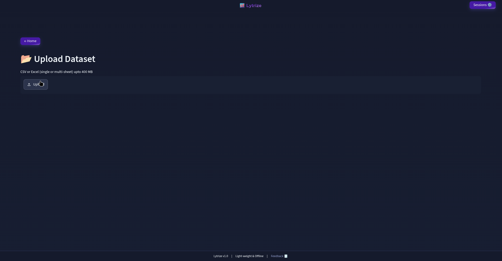
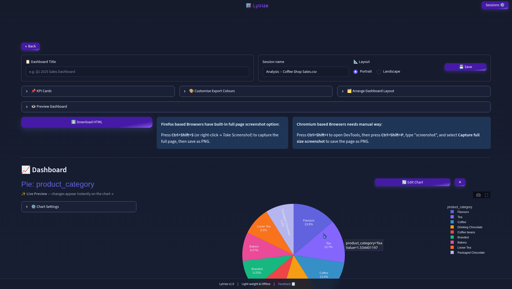
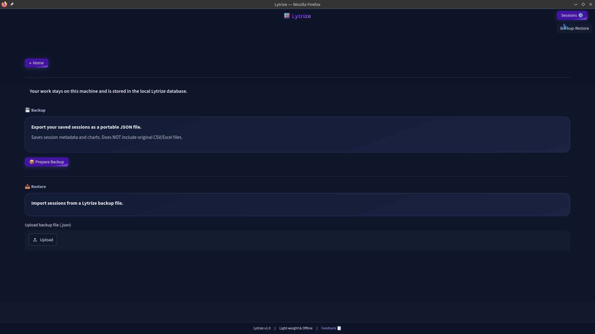

11+ analytical views
Descriptive and statistical summaries, distributions, correlations, categorical charts, time series, scatter plots, pivots, heatmaps, maps, outliers and data-quality checks.
Lytrize is a free, open-source desktop app that analyzes CSV and Excel files locally. Open a file, explore it with 11+ charts, build a dashboard, and share it as a single HTML file. No account. No cloud. Works offline.
Built around practical analytics work: open CSV or Excel files, clean and transform them locally, explore patterns, build a dashboard, save your session, and share the result — all without your data leaving your device.
Descriptive and statistical summaries, distributions, correlations, categorical charts, time series, scatter plots, pivots, heatmaps, maps, outliers and data-quality checks.
Arrange generated charts, add KPI cards, choose layout, title the dashboard and export a self-contained HTML artifact.
Re-upload updated data and preserve structural transformations such as renamed or calculated columns.
Sessions and dashboard state are stored locally with SQLite and local dataset snapshots.
Prebuilt packages are available for Debian/Ubuntu, Fedora/RHEL/openSUSE and Windows 10/11.
No account, no analytics service, no cloud dataset upload. The current map plotting path may load external map tiles; a fully native/offline map workflow is part of the future Qt6 direction.

Recent work, dataset shortcuts and next steps right up front.

CSV / Excel ingestion with local preprocessing and validation.

11+ views — distributions, correlations, scatter, heatmaps and more.

One tap turns a column into a shareable analytical view.

Arrange charts and KPI cards into a shareable HTML layout.

Backup sessions and data so your work is never lost.
Lytrize Desktop v1.2 is the current public release, with Windows 10/11 support alongside Linux packages. Installs work offline and run analytics entirely on your device.
Straight answers about cost, privacy, platforms and how the workflow fits into your day.
Yes — Lytrize is completely free and open source under the MIT license. There is no account, no signup and no subscription. You download it, install it, and open your files.
Yes. Your CSV and Excel files are analyzed locally on your device; nothing is uploaded to a service. The only exception is the geographic map chart, which may load external map tiles. A fully native/offline map workflow is planned.
Install Lytrize, open it, click Start New Analysis and pick a CSV or Excel file. On the Analysis page choose a chart type, pick your columns and press Generate. Then click Proceed to Dashboard, arrange your charts, add KPI cards, and download the result as a single HTML file.
Lytrize reads CSV and Excel files up to about 400 MB. Very large datasets use smart sampling (8,000 points for scatter plots, 5,000 for maps) and chunked reading for CSVs over 30 MB. For smooth performance beyond 100 MB, 8 GB+ of RAM is recommended.
11+ views out of the box: bar, pie/donut, scatter, histogram, time series, correlation, pivot table, matrix heatmap, geographic map, outlier detection and data-quality checks — plus KPI summary cards on the dashboard.
Prebuilt packages are available from the GitHub Releases page: .deb for Ubuntu/Debian, .rpm for Fedora/RHEL/openSUSE, and a 64-bit .exe for Windows 10/11. On Linux install with dpkg -i or dnf install; on Windows run the installer.
Download your dashboard as a self-contained HTML file — it opens in any browser without Lytrize installed. To save it as a PNG, open the file and use your browser's full-page screenshot tool (DevTools > Capture full size screenshot, or Firefox Ctrl+Shift+S).
Yes. Sessions are saved locally in SQLite. Re-upload an updated dataset and your charts and KPI cards regenerate automatically, preserving renamed and calculated columns. You can also export a JSON backup from Home → Restore Backup and restore it on any machine.
App won't start or need more help? See the troubleshooting guide on GitHub ↗
Lytrize is intentionally separated into application layers so the analytics engine can evolve independently from the UI. The current release uses a PySide6 desktop launcher around the local analytics application; the roadmap moves further toward a native Qt6/PySide6 experience.
Lytrize started from real-world analytics work: dealing with spreadsheets, exploratory analysis, repeatable transformations, dashboards and the practical need to keep sensitive data under the user's control.
The project is open source and evolving toward a stronger native Qt6/PySide6 desktop architecture.
Download the current build or inspect the project on GitHub.
Hands-on demos covering the workflow, analytics, dashboards, and desktop experience.